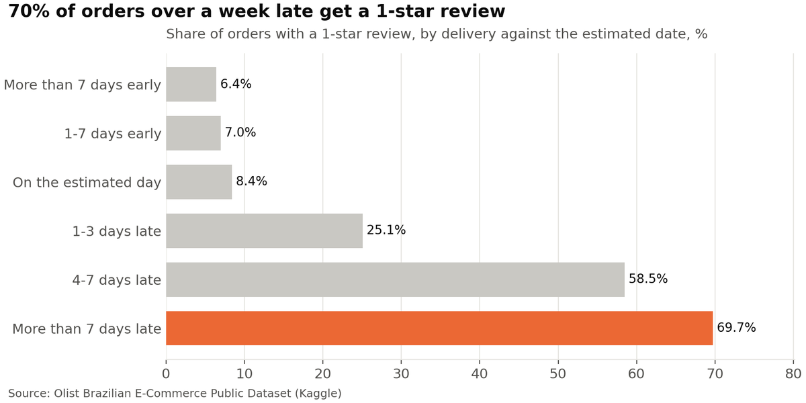

01 · SQL
Late deliveries drive 1-star reviews
E-commerce sales and delivery analysis, 99,441 orders
Orders delivered more than a week late received a 1-star review 70% of the time. Late orders were only 6.7% of deliveries but produced 37% of all 1-star reviews, and the five worst states for late delivery are all in Brazil's North-east.
- PostgreSQL
- SQL window functions
- Python
- matplotlib